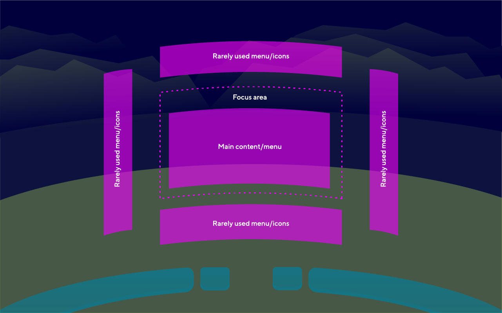

Motion Sickness Guidelines

The following are some basic considerations for avoiding motion sickness:
- Design for minimal user head movement inside VR.
- The main content should fit in to the field of view. If it is larger, use a scroll bar in both directions.
- Avoid positioning UI at the extreme top or bottom of the FOV.
- The main content should be placed along the users´ central line of sight, enabling comfortable viewing. However, ensure that the users can still gather information relating to the direction of travel in their peripheral vision.
- Make sure peripheral vision is aligned with the users’ motion (theoretically).
- Avoid too many simultaneously moving items/objects, however, peripheral vision is an exception to this.
- Provide settings to enable control of moving items/objects.
- Make sure that the UI does not incorporate contrasting colours.
- Do not design interactions that require 360 degrees of rotation for any reason.
- Avoid repetitive patterns on surfaces. Keep it simple.
- Make sure that the user feels grounded and safe.
- Avoid animations which involve elements moving across a large area.
- Quality of the content must be at least 60PFS. No blurry and pixelated UIs.
Reading guidelines
- If the user needs to move within the virtual environment, use RSVP (rapid serial visual presentation) for small blocks of text, displayed either in the edge-fixed (2) or in the head-fixed (3) location.
- If reading is the primary task and the text is long and important, display text as a paragraph either in the world-fixed (1) or in the edge-fixed (2) location.
Note
(1) World-fixed - a static, in-situ text in the virtual environment.
(2) Edge-fixed - a text with static position and dynamic orientation that vertically tilts to face the user while staying attached to the virtual environment with an edge.
(3) Head-fixed - a text in a head-up display.
Next Step: Accessibility Guidelines